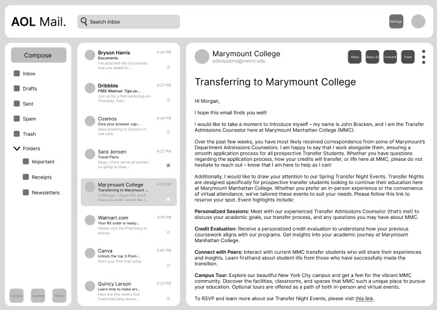

For a project in my Communicating Digital Design class, I redesigned the AOL Mail Application. I focused on addressing some of its major design flaws, such as excessive ads and unclear or unnecessary functions. The main objective for this project was to practice redesigning and application rather than just a website. I had to make sure that that all the essential functions were still there as well as ensuring that each feature was well-implemented and aligned with design guidelines, such as appropriate font and icon sizes. Although I worked on most of the components by myself, I also had a few in-class activities in which we collaborated and brainstormed some ideas for different stages in groups. The main challenge for this assignment is was completing the redesign in just a few weeks.
I started this project off by creating some mood boards. This helped me gather inspiration from other successful mail apps to guide my own design. I went through eight different examples. One thing I knew I wanted to implement was a 3-column structure of sorts, where the left column had functions, the middle column had all the emails, and the right column had the email that was selected in the middle column. I mainly took inspiration from Canary, Outlook, and Proton Mail, since those three had the kind of design that I was looking to implement. I was also inspired my Gmail’s mobile app for my own redesign of AOL’s mobile version as well.
Following this, I sketched different iterations for both mobile and desktop versions of the web application. My goal for this step was to explore a variety of layouts. I created six iterations for the desktop version and three for the mobile version, with an additional three iterations dedicated to experimenting with hamburger menu designs. This exploration allowed me to refine the visual and functional aspects of the redesign while still maintaining AOL’s brand identity.
After the sketches, I moved on to creating wireframes. I had to design five different pages for both desktop and mobile. I needed to pay extra attention to detail since I needed to make sure that button sizes, font sizes, and proper spacing between elements were all correct for this step. I had to make sure that I got this right here so that I wouldn’t have to do that for the surface com ps later. Since it was my first time redesigning a web application, I encountered challenges in ensuring that everything—from headers to body text—was appropriately sized for both platforms. My focus was on keeping the layout clean, minimal, and user-friendly, ensuring a clear hierarchy of information and avoiding any cluttered or crammed elements.
In the final stage, I created surface comps where I experimented with different colors, fonts, and icons. I chose a nice blue accent to align with AOL Mail’s existing color scheme while keeping the rest of the colors neutral, incorporating a light gray background and white “cards” to separate each area. I also added rounded edges to many elements and introduced simple, curved icons for inbox, drafts, and other features, aiming for a sleek, modern look. This stage helped me solidify the visual identity of the redesign while making sure it remained functional and aesthetically pleasing.
The project certainly had its challenges, particularly since it was my first time redesigning an entire application. I had to repeatedly fix issues, such as incorrect button sizes, and juggle many design considerations at once. The mobile version in particular gave me some issues since I was not used to thinking about mobile first. Despite these frustrations, the iterative process ultimately strengthened my understanding of UI/UX principles. Overall, the project was a rewarding learning experience, and I’m proud of the final result!